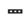

| CHOKU or JIKI |
|
My hand directly smacks the fly because it's a loser. (and it vomited on my CHOCOlate) This fixed the problem of vomi-chocolate. Now I feel more JIGGY. |
| ( を ) なお＊す |
to fix / reform / correct a problem ( a broken chair, an inneficient beuraracrarcy, a poorly spelled word). Doesn't mean the thing was totally fucked up. Sometimes 直す just means do some minor alterations or revisions to make some shit perfect. Also means redo, as in かけ直して (phone me back).
★★★★☆ |
| ( が ) なお＊る |
it gets fixed
★★★☆☆ |
| 直接 の or に |
direct.
★★★★☆
directly (not just direct communication, but direct anything) (adjective form:直接的な） |
| 正直 な |
honest / loyal
★★★☆☆
very honest person, very loyal. Person with integrity. Also means, "To tell you the truth. . . xxxx" |
| ｘｘｘ と 仲直り する |
to make up
★★★☆☆
to make up with XXX , to restore a friendship |
| 素直 な |
obedient
★★☆☆☆
KUN ON
obedient, gentle (kind of usually used in a sexist way to compliment a lady. I have a hat with sunao written on the front which always is good for nervous laughter.) |
| 直前 に |
immediately before
★☆☆☆☆
|
| Meaning | Hint | Radical | |
|---|---|---|---|
| 植 | plant | TREE | 木 |
| 具 | tool | WITHOUT THE 'TEN' RADICAL | |
| 真 | really | TEN | 十 |
| 県 | prefecture | SMALL | 小 |
| 直 | correct a problem / direct contact | 'L' | L |
| 置 | put down on table | NET |  |
TREES are plants
The truth is worth TEN TOOLS.
I come from a SMALL prefecture.
You can't spell "correct a probLLLLem" without an “L".
You put the NET down on the table.
|
cure
直す 治す |
|
directly
接する 直接 つなぐ 直に |
|
faithful, upstanding
誠 誠実 正直 堅実 忠実 |
|
fix
修理 直す 繕う 修繕する |
|
honor
名誉 光栄 潔さ 正直 |
|
sign or symptom
兆候 前兆 縁起 直感 |
|
stiffen
硬くなる 固める 硬直する 硬化 |
 KANJIDAMAGE
KANJIDAMAGE